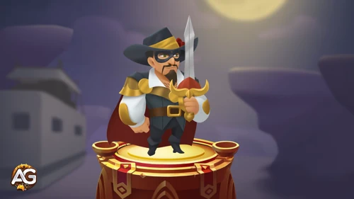

Bem-vindos de volta, comandantes, a mais um guia de Top Troops aqui no Alexandre Games! Hoje, vamos nos aprofundar em uma das unidades mais intrigantes e poderosas do jogo: El Bandolero.
Esta lendária unidade corpo a corpo da Facção dos Caçadores é uma força a ser reconhecida, especialmente nas fases intermediárias e finais das batalhas. Se você está procurando dicas sobre como usá-lo com eficiência, priorizar suas habilidades ou montar o melhor time ao seu redor, este guia é para você. Vamos começar!

El Bandolero é um fora-da-lei misterioso e carismático. Para seus companheiros bandidos, ele é um camarada generoso. Para os nobres ricos, ele é um ladrão notório que rouba seu ouro. E, para muitas mulheres, ele é o homem que desaparece antes do amanhecer, deixando apenas o aroma de sua colônia para trás. Mas, no campo de batalha, El Bandolero é um lutador lendário que fica mais forte a cada aliado caído.
Sua mecânica única o torna uma força poderosa no final da partida, especialmente quando combinado com as unidades certas. Se você está procurando por uma unidade que pode virar o jogo a seu favor, El Bandolero é a escolha certa. Vamos detalhar suas habilidades, dicas de batalha e como maximizar seu potencial.
As habilidades de El Bandolero giram em torno de ganhar força com aliados caídos e se tornar uma força imparável no final da partida. Aqui está uma análise detalhada de suas habilidades e como priorizá-las:
Efeito: Cada vez que uma unidade não invocada no exército de El Bandolero morre, seu dano aumenta em 35%, até um máximo de 500%.
Efeito de Melhoria:
Prioridade: 1ª
Esta é a habilidade principal de El Bandolero e a razão pela qual ele se destaca no final da partida. Maximizar essa habilidade desde o início garante que ele se torne um causador de dano devastador conforme a batalha avança.
Efeito: Quando uma unidade não invocada no exército de El Bandolero morre, ele recupera 15% de sua saúde máxima.
Efeito de Melhoria:
Prioridade: 2ª
Essa habilidade mantém El Bandolero vivo e saudável até que ele atinja seu potencial máximo. É essencial para sua sobrevivência, especialmente em batalhas mais longas.
Efeito: Se El Bandolero estiver envenenado, sua chance de acerto crítico aumenta em 65%. Ele também é imune a danos de veneno.
Efeito de Melhoria:
Prioridade: 4ª
Embora essa habilidade seja situacional, é incrivelmente útil contra inimigos baseados em veneno, como Druida Ranídeo, Meiga, Apicultor, Fanfarrão e Rei da Gosma. No entanto, como nem todos os inimigos usam veneno, ela fica em uma prioridade menor.
Efeito: Após 10 unidades não invocadas no exército de El Bandolero morrerem, ele se torna invulnerável a danos e efeitos de interrupção por 8 segundos. Sua velocidade de movimento aumenta em 300%, e sua velocidade de ataque aumenta em 35%.
Efeito de Melhoria:
Prioridade: 3ª
Essa habilidade transforma El Bandolero em uma força imparável no final da partida. Embora seja incrivelmente poderosa, ela só é ativada após perdas significativas, então priorize-a após suas habilidades de dano e cura.
El Bandolero se destaca em equipes que podem apoiar sua mecânica única. Aqui estão alguns dos melhores aliados para combiná-lo, organizados por custo de população:
Embora El Bandolero seja uma força poderosa, ele não é invencível. Aqui estão algumas unidades e estratégias para contra-atacá-lo:
Ascender El Bandolero é uma prioridade máxima se você quiser dominar em Top Troops. Aqui está como priorizar sua evolução:
El Bandolero é uma das melhores unidades em Top Troops para jogadores que gostam de dominar estrategicamente o final da partida. Sua mecânica única o torna uma adição versátil e poderosa a qualquer equipe, especialmente quando combinado com os aliados certos. Seguindo este guia, você será capaz de maximizar seu potencial e dominar o campo de batalha.
Se você achou este guia de Top Troops útil, não se esqueça de compartilhá-lo com seus companheiros comandantes e deixar um comentário abaixo. Fique ligado no Alexandre Games para mais dicas, truques e guias sobre as melhores tropas e estratégias em Top Troops!
 O Guia Definitivo do Tigre Espirituoso em Top Troops
O Guia Definitivo do Tigre Espirituoso em Top Troops
 Guia do Ymir: Domine as Batalhas de Tropas de Elite com Esta Unidade
Guia do Ymir: Domine as Batalhas de Tropas de Elite com Esta Unidade